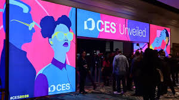

CES 2026 — The Week in Tech: Vera Rubin, AI PCs, Bright OLEDs, Robotaxis & More
CES 2026 in Las Vegas showcased the industry’s next big moves: from NVIDIA’s Vera Rubin AI computing platform to AMD and Intel’s client- and data-center focused AI silicon, Samsung’s “AI living” TV vision, and new robotaxi/humanoid demonstrations that push autonomy and robotics closer to commercial reality.
NVIDIA: Vera Rubin platform
NVIDIA officially launched the **Vera Rubin** AI computing platform at CES 2026, positioning it as a rack-scale, production AI architecture that combines a Vera CPU, Rubin GPU, advanced interconnects and DPUs to dramatically reduce model-training costs and increase efficiency. Jensen Huang said Rubin is entering production and will ship into partner data centers later in the year.[1] :contentReference[oaicite:0]{index=0}
AMD: AI across client and data center
AMD used CES to expand its “AI everywhere” message — unveiling new Ryzen AI and client AI chips alongside rack-scale solutions and software updates for ROCm and model support. The emphasis is on AMD expanded its AI strategy with new client and data-center processors at CES 2026.[2] :contentReference[oaicite:1]{index=1}
Intel: Core Ultra / Panther Lake & client performance
Intel reinforced its client roadmap with new Core Ultra / Panther Lake-family announcements, promising gaming and AI performance improvements that close the gap to discrete solutions in some scenarios. Intel announced new Core Ultra and Panther Lake updates focused on client AI performance.[3] :contentReference[oaicite:2]{index=2}
Samsung: AI Living — smarter TVs and home integration
Samsung presented its “Companion to AI Living” vision, showing TVs and home systems that weave AI assistants, contextual content, and device-to-device intelligence together. The focus is on ambient intelligence rather than standalone features — TVs that proactively help and adapt. Samsung outlined its “AI Living” vision, integrating AI deeply into its TV and home ecosystem.[4] :contentReference[oaicite:3]{index=3}
LG: brighter OLEDs and new form factors
LG showed upgraded OLED models with improved brightness and lower reflections, along with the return of the “Wallpaper” ultra-thin form-factor in new variants. Those panels target premium living rooms and cloud-gaming applications with 4K/120Hz support. LG showcased brighter OLED panels and the return of ultra-thin Wallpaper TV designs.[5] :contentReference[oaicite:4]{index=4}
Autonomy & Robotaxis — Uber / Lucid / Nuro debut
Uber, Lucid, and Nuro revealed a production-ready robotaxi built on Lucid’s Gravity platform with Nuro’s driving system and an Uber-designed interior — a concrete step toward commercial deployment and an indicator that robotaxi competition is entering a production phase.Uber, Lucid, and Nuro revealed a production-ready robotaxi platform at CES 2026.[6] :contentReference[oaicite:5]{index=5}
Humanoid robots and robotics demos
CES 2026 included humanoid and general-purpose robots that showcased better manipulation, longer battery life, and deeper integration with cloud AI. While still far from household ubiquity, the demos showed practical use-cases in logistics, hospitality, and assisted living.
Analysis — what this means for the year ahead
CES 2026 framed 2026 as the year of systems: chips alone aren’t enough. Companies are shipping platforms (like Vera Rubin), client-side AI to everyday PCs, and vertically integrated products (AI TVs, robotaxis) that connect hardware to cloud services. Expect intense competition across chips, software stacks, and service models.
Where to watch
Follow primary vendor blogs, CES coverage from major outlets, and company press pages for product availability and detailed technical briefs.
Sources & References
- NVIDIA unveils Vera Rubin AI platform at CES 2026 — NVIDIA Official Newsroom
- AMD expands AI PC and data-center roadmap at CES 2026 — AMD Newsroom
- Intel announces new Core Ultra and Panther Lake updates — Intel Newsroom
- Samsung reveals AI Living TV vision at CES 2026 — Samsung Global Newsroom
- LG showcases brighter OLED and Wallpaper TVs — LG Newsroom
- Uber, Lucid, and Nuro debut robotaxi platform — Uber Newsroom